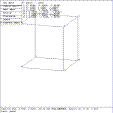

 Figure (es8-scale): ARB8 Scale Increased by 2X
mged> Select the ``Scale'' entry in the solid edit menu
mged> p 2
mged>
Figure (es8-scale) corresponds to the view that is shown on the display. The scale operation may be initiated by either selecting the Scale entry on the menu with the mouse, by depressing the Solid Scale button, or by entering press sscale on the keyboard. The parameter command p n is used to enter a precise scale factors, where n is the scale factor. The coordinates of point 1 remain the same. The distances from point 1 to the other points are multiplied by the scale value n. The general equations for the transformation from point p to p' are
x'[i] = x[i] + n (x[i] - x[1] )
y'[i] = y[i] + n (y[i] - y[1] ) i != 1
z'[i] = z[i] + n (z[i] - z[1] )
The size of the primitive may be changed by depressing the mouse at different positions. When the mouse is clicked, the edited primitive is scaled about point 1 (the key point) by an amount proportional to the distance the mouse is from the center of the screen. If the mouse is above the center of the screen, the edited primitive will become larger. If the mouse is below the center, the primitive will become smaller.
The value of n entered is applied to the primitive as it existed when the solid scale state was entered.
Entering p 1 will return the primitive to the size it had when the solid scale operation first started.
mged> p 1
mged>
{kind=link}